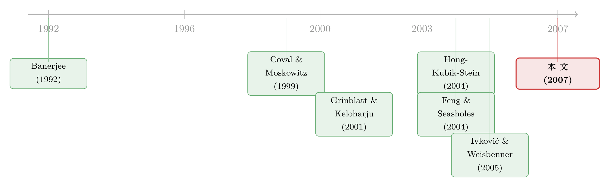

你买的那只股票，多半是邻居「说」给你听的
本文读的是 Ivković & Weisbenner (2007, RFS)：用 35,673 个美国家庭在 1991–1996 年的散户交易数据，作者发现邻居在某个行业的买入比例每上升 10 个百分点，家庭自己在该行业的买入就跟着上升约 2 个百分点；这种「邻里效应」在本地股票上强到近乎一比一，且在社交程度更高的州更明显——其中约四分之一到二分之一无法用偏好相似或本地经济结构解释，作者把它当作「口口相传」(word-of-mouth) 的保守下界。
1 一个看似无聊的相关，藏着一个不无聊的问题
先讲一件几乎不会让人惊讶的事：你和你邻居买的股票，是相关的。
这有什么稀奇？住在同一个城市的人，读同一份地方报纸，看同一个本地新闻台，门口同一家工厂裁了员、同一家药企出了新药。大家对着同一批公开信息做反应，买卖自然就「撞衫」了。要把这种相关说成什么了不起的发现，未免太天真。
但作者偏偏盯住了这个相关，并且追问了一个真正要紧的问题：这份相关里，到底有多少是「大家各自看到同一条新闻」，又有多少是「邻居把消息亲口讲给了你」？
这两件事听起来差不多，含义却天差地别。前者只是公开信息的同步反应，价格里早就消化掉了；后者——口口相传——意味着信息是沿着一张社会关系网一格一格扩散的，它会让某些人的交易在时间上扎堆、在方向上一致，足以推动价格。换句话说，如果第二种力量真实存在，那么「你邻居在聊什么股票」就不再是闲谈，而是一个能影响资产配置、甚至影响股价的经济变量。
问题在于，这两种力量在数据里长得几乎一模一样。怎么把它们拆开？这篇论文的全部精彩，都在这个「拆」字上。
2 识别策略：先量出相关，再一层层剥掉「不是口耳相传」的部分
作者的做法朴素得近乎笨拙，却正因如此而干净。
第一步，把相关量出来。 他们不看个股，而是把每个家庭每个季度的买入按 SIC 代码归进 14 个行业，算出每个家庭 h 在季度 t、行业 i 的买入金额占比 f_{h,t,i}（按美元加权，乘以 100 写成百分点）。再算出这个家庭周围 50 英里内所有其他邻居（剔除 h 本人）在各行业的买入占比 F50_{-h,t,i}。核心回归就是把前者对后者做投影：
这里有一个容易被忽略却至关重要的设计：那 322 个 行业×季度 哑变量 D_{t,i}。科技股集体超预期、某行业整体创新高——这些是所有投资者共享的信息集，会让全国家庭同向买入。把 行业×季度 固定效应放进去，等于先把「这个季度全市场都在追科技股」这件事整体扣掉，剩下的 β 捕捉的，是同一时间、同一行业，不同社区之间买入倾向的差异。换句话说，作者不问「大家是不是都在买科技」，只问「为什么偏偏是你这个社区的人，比别处的人更爱买科技」。
跑出来的基准系数是 β = 20.7（标准误仅 0.3，t 值高得离谱）。因为 f 是百分点而 F50 是比例，这个数除以 10 才是直觉量级：邻居在某行业的买入占比上升 10 个百分点，家庭自己的买入占比上升约 2.07 个百分点。 而且这不是某几个季度的偶然——分季度单独回归，23 个季度的点估计全部显著为正，落在 13.6 到 28.3 之间。相关是真实而稳健的。
但量出相关，只是开了个头。真正关键的一步，是怎么把「口耳相传」从这 20.7 里剥出来。作者用了两把刀。
3 第一把刀：本地 vs. 非本地
接着，一个自然的问题是：如果这份相关真有口耳相传的成分，它应该在本地股票上表现得最凶。
道理很直白。无论是偏好相似、本地产业结构、还是真正的口耳相传，这些「邻里」力量都更可能落在本地公司身上——因为关于本地公司的、有价值的信息，流动得更频繁、质量也更高（这一点 Coval & Moskowitz (2001) 在基金经理身上、Ivković & Weisbenner (2005) 在散户身上都已证实）。作者把公司总部在家庭 50 英里以内的定义为「本地股」，把买入拆成本地与非本地分别回归。
结果是一个数量级的差距：本地买入的邻里效应 β = 119.3，非本地只有 8.4。 翻译成直觉——如果邻居把本地买入的 10 个百分点配给某行业，这个家庭自己的本地买入也会几乎同步地、近一比一地往那个行业挪。考虑到散户本就有强烈的本地偏好（样本里 17.1% 的买入投向了本地公司，与 Zhu (2002)、Ivković & Weisbenner (2005) 一致），作者顺势提出一个有意思的猜想：也许正是这股强劲的邻里信息扩散，在背后助推了散户的本地偏好。
这与「地理近就是信息近」的逻辑是一脉相承的。关于「线下见面」这种社交渠道本身如何传递本地信息，可参见《见面，还重要吗？——把「线下社交」从「地理临近」里剥离出来》。
不过，本地强、非本地弱，仍不能完全坐实口耳相传——本地公司里偏好相似、产业结构这些因素本来也更强。于是作者亮出了第二把、也是更锋利的一把刀。
4 第二把刀：社交程度，一个只该影响口耳相传的开关
这把刀的逻辑堪称全文最漂亮的地方。
作者问：在那些导致相关的力量里，哪一种应该随社区的「社交程度」而变化？答案是——只有口耳相传。如果人们彼此串门、互相信任、聊天聊到股票，那么社区越爱社交，邻里效应就应该越强。而偏好相似和对本地新闻的共同反应这两种力量，没有理由随社交程度起伏：报纸该读还是读，工厂裁员该知道还是知道，跟你爱不爱跟邻居唠嗑无关。
于是这成了一个干净的「差分」检验。作者借用 Putnam (2000)《Bowling Alone》里的州级综合社会资本指数 (Comprehensive Social Capital Index)——它综合了串门时间、人均社团数量、对他人的信任度等 14 个维度——按这个指数把家庭分成「社交型」与「非社交型」两组。
结果正如假说所料：社交型州里的邻里效应，显著强于非社交型州。 一个只该拨动口耳相传、却拨不动其他渠道的开关，确实把系数拨动了——这就把「相关里有口耳相传」从猜想推进到了证据。
然后是收尾的「剥洋葱」：作者在回归里同时塞进家庭自己期初的行业持仓结构（揭示其偏好）、邻居整体的期初持仓结构（揭示社区偏好）、以及本地企业和本地就业的行业构成（揭示本地经济结构）。把这些「偏好相似」「产业结构」的解释统统控制掉之后，仍有四分之一到二分之一的整体扩散效应无法被解释。作者把这部分残余，当作口耳相传影响的一个保守下界。
于是反转出现了：那个一开始看上去「无聊」的相关，被一层层剥到最后，露出了一块结结实实、用偏好和新闻都解释不掉的内核。
5 一面镜子：为什么美国是口耳相传，中国却不是
把本文的结论放进国际背景里，会读出更深的一层意思。
几乎同期，Feng & Seasholes (2004) 用中国券商数据做了一个极巧的识别：当时中国投资者只能在开户的那家营业部当面下单。于是「同一营业部内的相关交易」对应口耳相传，「同一地区跨营业部的相关交易」对应对本地公开消息的共同反应。他们的结论是——驱动羊群的是对本地新闻的共同反应，几乎看不到口耳相传。
这恰好和本文相反。作者给出的解释带着社会学的味道：Freedom House 的评级里，美国的公民自由度名列前茅，而当时的中国处于末端，而「公开自由的讨论」正是公民自由评分的核心成分之一；加上彼时中国多数公司或多或少有政府背景，在一个缺乏自由讨论氛围的社会里，交换投资信息本就稀少而克制。同一种交易相关，在两个社会里由完全不同的机制驱动。 这是一个很好的提醒：行为金融的「规律」，往往嵌在制度与文化的土壤里。
6 数据：一份被反复使用的经典散户样本
- 散户交易：来自一家大型折扣券商，35,673 个家庭、1991–1996 共 6 年的月度持仓与交易。这正是 Barber & Odean (2000) 那份著名的散户数据集。普通股约占家庭总投资额的四分之三。
- 公司与价格：
CRSP取价格与收益，COMPUSTAT取公司特征与总部所在地（用总部、而非注册地来定位）。1991 年底的「市场」含 5,478 只股票，覆盖当时总市值的 89%。 - 地理：用美国人口普查局 (1990) 的 Gazetteer 数据库给邮编和县匹配经纬度，再用大圆距离公式算两点间的法定英里数。50 英里这个半径不是随手挑的——按 1990 年普查，88% 的人住在距工作地 25 英里内、98% 在 50 英里内，这个范围能覆盖一个人大部分的社会交往。
- 样本规模：23 个完整季度、14 个行业、每季约 7,000–9,000 个有买入的家庭，合计
2,678,004个观测；季度买入金额的分布高度右偏，均值约$29,000，中位数仅约$8,000。
7 文献脉络
这篇论文站在两条河流的交汇处。
一条是社会互动与信息扩散的河。理论源头是 Banerjee (1992) 的羊群模型，以及 Ellison & Fudenberg (1993, 1995) 关于「口耳相传」与「观察学习」的社会学习框架。把这套思想搬进金融的，是 Hong, Kubik & Stein：他们先在 (2004) 论证社会互动会影响股市参与，再在 (2005)《Thy Neighbor's Portfolio》里发现基金经理「同城的人持有/买/卖某股票，自己也更可能跟着动」。Duflo & Saez (2002, 2003) 则在退休金计划里给出了同事间同伴效应的证据。本文的标题——「Covet Thy Neighbors' Investment Choices」——几乎是在向 Hong-Kubik-Stein 致敬，并把问题从基金经理扩展到散户。

另一条是地理与本地偏好的河。Coval & Moskowitz (1999, 2001) 揭示了机构的本地偏好与本地信息优势，Grinblatt & Keloharju (2001) 在芬兰发现距离、语言、文化都左右持仓，Zhu (2002)、Ivković & Weisbenner (2005)、Massa & Simonov (2006) 则刻画了散户的本地偏好。本文把这两条河汇到一起：散户不仅扎堆买本地股，本地股上的邻里信息扩散还格外强劲——前者或许正是后者的一个后果。
至于本文的坐标：它与 Hong, Kubik & Stein (2005) 互补——两篇用截然不同的技术（他们靠 Reg FD 前后与「投资者关系无关」的股票来排除替代解释，本文靠社交程度的州际差异加偏好/产业结构控制变量）指向同一个结论，从而互相加固了「口耳相传是一个广泛现象」的整体判断。
信息沿网络扩散这条线，今天仍在延展。关于信息如何因「共同股东」这张网而变慢，可参见《被「同一批股东」拖慢的消息》；关于同伴信息如何改变真实行为，另见《你不会去模仿邻居，但你会模仿一个你永远见不到的「同类」》。
8 评论与延伸（Q&A + 研究方向）
(a) 几个可能的疑问
Q：作者口口声声说「拆开」了口耳相传，可他们终究没观测到任何一次真实对话，这凭什么算因果？
诚实地说，他们没有、也无法直接观测对话。本文的全部说服力来自一个间接但聪明的排他逻辑：找到一个理论上只影响口耳相传、却不影响其他渠道的变量（社交程度），看系数是否随它变化。这是「证据」而非「铁证」。作者本人也很克制，把残余的四分之一到二分之一称为口耳相传的保守下界，而不是点估计。
Q：那 行业×季度 固定效应，真能扣干净「共同反应公开新闻」吗？
它能扣掉全市场层面的共同冲击（某季度所有人都在追科技股），但扣不掉社区层面的本地新闻冲击——同一座城里的工厂裁员、本地药企出新药，正是会让本地家庭同步交易、却又不是口耳相传的东西。这恰恰是为什么作者必须再加社交程度这把刀：本地新闻的共同反应不该随社交程度变化，而口耳相传该变。两道防线叠起来，残余才更可信。
Q：β = 119.3 这个数看着吓人，是不是哪里被放大了？
不是错，是单位。
f写成了百分点（×100），而邻居占比F50是 0–1 的比例没有放大。所以系数要除以 10 才对应「邻居变动 10 个百分点」的直觉：本地约12个百分点、全样本约2个百分点、非本地约0.8个百分点。读这类论文，先核对自变量的量纲，能省去很多惊吓。
Q：这和单纯的「本地偏好」是一回事吗？
不是。本地偏好说的是「散户超配本地股」这个水平；本文说的是「同一社区内，邻居买什么会牵引你买什么」这个协动。作者的猜想是后者可能助推前者，但二者是不同的现象——你完全可以想象一个本地偏好很强、却彼此不交流的社区。
Q：会不会是反向因果——是「我」影响了邻居，而不是邻居影响我？
在
F50_{-h,t,i}里作者已经剔除了家庭h本人，所以不是机械的自我相关。但「我和我的几个朋友互相影响」这种双向溢出确实无法完全分离——这也是为什么作者用「信息扩散」这个中性、含义宽泛的词来概括整个相关，而把口耳相传只当其中一块。
Q：和中国的反例放在一起，到底想说明什么？
想说明行为金融的结论不可移植。同样是散户相关交易，美国的主力是口耳相传、中国的主力是对本地新闻的共同反应。作者把差异归到公民自由与公司所有制结构上——一个缺乏自由讨论氛围、且公司多有政府背景的市场，信息更难在私人网络里流动。这提醒我们：把任何一国的散户行为「规律」直接套到另一国，都要先问一句制度土壤是否一样。
(b) 几个可能的研究问题与提案
1. 把「邻里效应」搬进公司债/信用市场。 【经济故事】散户在公司债市场同样存在、且信息更不透明、本地发行人更突出（地方公用事业、区域银行）。如果口耳相传在股票上成立，在更不透明的本地信用债上可能更强——不透明恰恰抬高了私人信息的价值。 【可行性】中。需要带地理标识的散户/家庭层面债券交易数据（如某券商零售债券台账或 TRACE 配合经纪商客户地理），识别可沿用本文「社交程度×本地发行人」的双重差分。难点是散户公司债交易数据稀缺且本地发行人样本薄。
2. 数字时代，邻里还重要吗？ 【经济故事】本文样本停在 1996 年，那时口耳相传几乎只能靠面对面。社交媒体、散户论坛兴起后，「邻居」的定义从地理半径变成了虚拟社群——口耳相传可能脱离 50 英里、却在网络社群里更猛。 【可行性】高。可用 2010s 之后的散户交易数据，比较「地理邻里效应」随宽带/社交平台渗透率的衰减，把地理社群与线上社群两条扩散渠道分离。识别可借用平台进入或网络中断的准实验（如券商宕机，参见相关研究）。
3. 邻里信息扩散与价格效率：扎堆的买单到底推没推动价格？ 【经济故事】作者反复暗示，口耳相传若让交易在时间上扎堆、方向上一致，就可能影响股价。但本文止步于交易行为，没走到价格。一个自然的下一步是：本地邻里买入扎堆是否带来短期价格压力与随后反转？ 【可行性】中。需把社区层面的本地净买入聚合到个股-周频，看其对收益的预测与反转。识别难点是要把邻里扎堆与公司基本面消息分开——可用社交程度作为工具或调节变量。
4. 外资持有人是否被排除在「口耳相传」网络之外？ 【经济故事】口耳相传依赖本地社会网络，那么离这张网最远的投资者——海外机构——理应最少受邻里扩散影响，更多依赖公开披露。这给「外资是否真的信息劣势」提供了一个新的检验角度。 【可行性】中。需带投资者类型与地理的持仓/交易数据。可比较本地散户、本地机构、外资在同一本地股票上的交易协动随社交程度的异质反应；外资若对社交程度「免疫」，则反衬口耳相传的本地性。与《外资真是「蝗虫」吗？》所关心的外资角色互补。
我的判断
这篇论文的贡献，不在于发现了「邻居交易相关」这个早就有人猜到的事实，而在于给一个看似无法识别的问题，造出了一把可以下手的尺子：用社交程度的州际差异，把「只随社交变化」的口耳相传，从「不随社交变化」的偏好相似与本地新闻里切了出来。这种「找一个只影响目标机制的调节变量」的思路，干净、可复制，至今仍是行为金融里识别社会互动的范式之一。
要说担忧，最大的还是识别的间接性。社交程度（社会资本指数）是州级的、且与无数其他州级特征相关——收入结构、教育、产业构成、甚至政治文化。作者用偏好与产业结构控制变量尽力堵这些口子，但「社交型州的居民恰好在别的某个维度上也更同步」这种遗漏变量，无法被彻底排除。所以「四分之一到二分之一」这个区间，与其当作精确测量，不如当作一个方向明确、量级合理的下界来读。此外，全文止步于交易行为，没有把邻里扩散和价格连起来——而这恰恰是作者在引言里最想暗示、却留给后人的部分。
我最想看到的后续，是把这把尺子移到今天：当「邻居」从 50 英里的物理半径，变成一个推荐算法喂给你的虚拟社群，口耳相传是被稀释了，还是被放大了？以及，那些被扎堆推上去的买单，最终有没有在价格里留下可被反转交易的痕迹。
参考文献
Banerjee, A. (1992). A Simple Model of Herd Behavior. Quarterly Journal of Economics 107(3), 797–817.
Barber, B., and T. Odean (2000). Trading is Hazardous to Your Wealth: The Common Stock Investment Performance of Individual Investors. Journal of Finance 55(2), 773–806.
Coval, J. D., and T. J. Moskowitz (1999). Home Bias at Home: Local Equity Preference in Domestic Portfolios. Journal of Finance 54(6), 1–39.
Coval, J. D., and T. J. Moskowitz (2001). The Geography of Investment: Informed Trading and Asset Prices. Journal of Political Economy 109(4), 811–841.
Duflo, E., and E. Saez (2002). Participation and Investment Decisions in a Retirement Plan: The Influence of Colleagues' Choices. Journal of Public Economics 85(1), 121–148.
Ellison, G., and D. Fudenberg (1995). Word of Mouth Communication and Social Learning. Quarterly Journal of Economics 110(1), 93–125.
Feng, L., and M. Seasholes (2004). Correlated Trading and Location. Journal of Finance 59(5), 2117–2144.
Grinblatt, M., and M. Keloharju (2001). How Distance, Language, and Culture Influence Stockholdings and Trades. Journal of Finance 56(3), 1053–1073.
Hong, H., J. D. Kubik, and J. C. Stein (2004). Social Interaction and Stock-Market Participation. Journal of Finance 59(1), 137–163.
Hong, H., J. D. Kubik, and J. C. Stein (2005). Thy Neighbor's Portfolio: Word-of-Mouth Effects in the Holdings and Trades of Money Managers. Journal of Finance 60(6), 2801–2824.
Ivković, Z., and S. Weisbenner (2005). Local Does as Local Is: Information Content of the Geography of Individual Investors' Common Stock Investments. Journal of Finance 60(1), 267–306.
Ivković, Z., and S. Weisbenner (2007). Information Diffusion Effects in Individual Investors' Common Stock Purchases: Covet Thy Neighbors' Investment Choices. Review of Financial Studies 20(4), 1327–1357.
Massa, M., and A. Simonov (2006). Hedging, Familiarity and Portfolio Choice. Review of Financial Studies 19(2), 633–685.
Putnam, R. D. (2000). Bowling Alone: The Collapse and Revival of American Community. Simon and Schuster, New York.
Zhu, N. (2002). The Local Bias of Individual Investors. Working Paper, Yale School of Management.